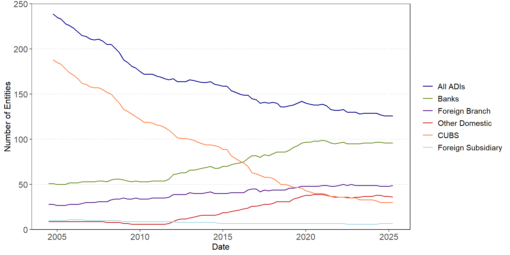
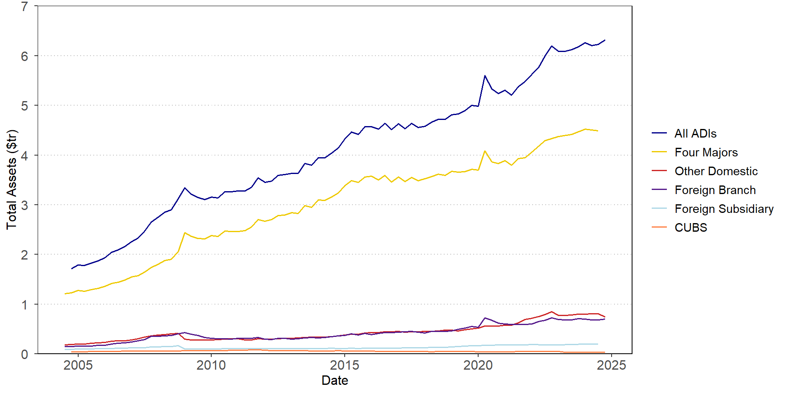
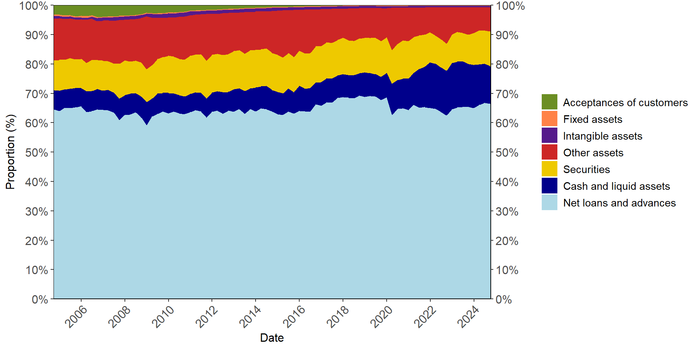
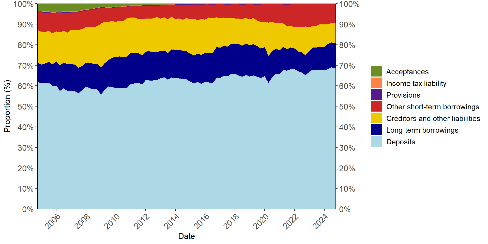
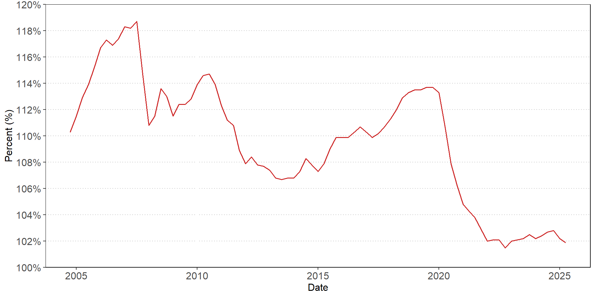
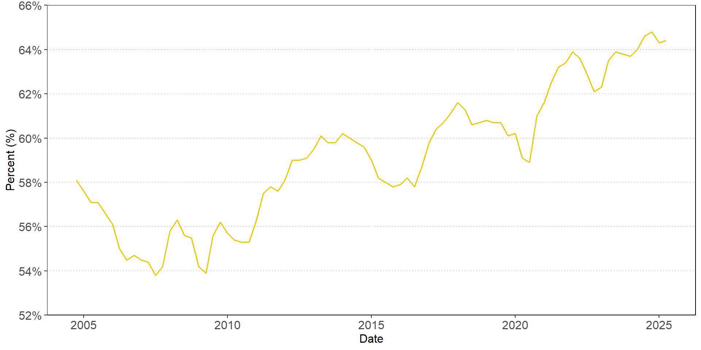
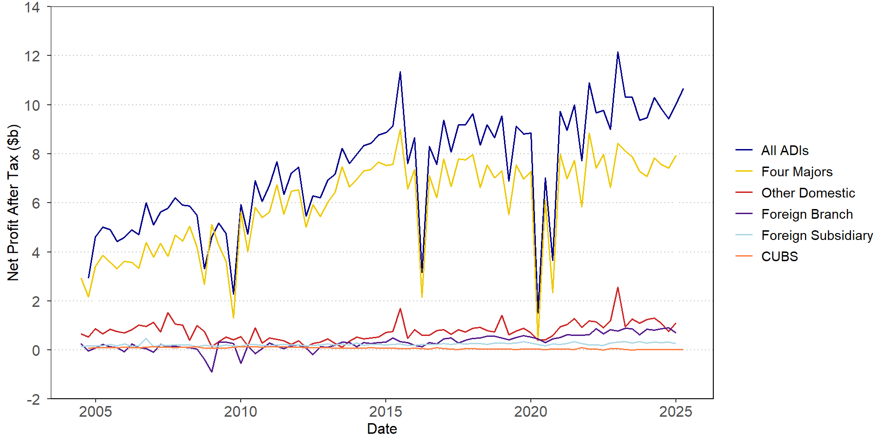
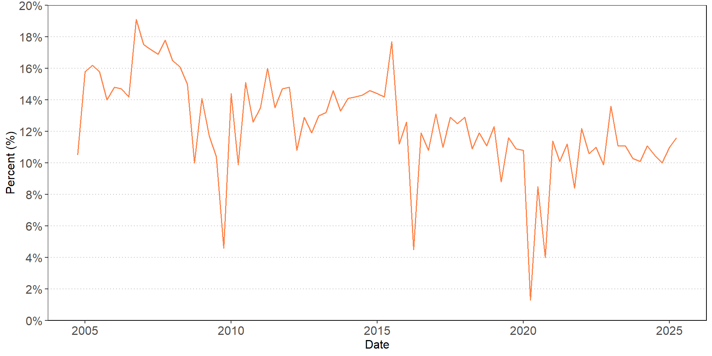
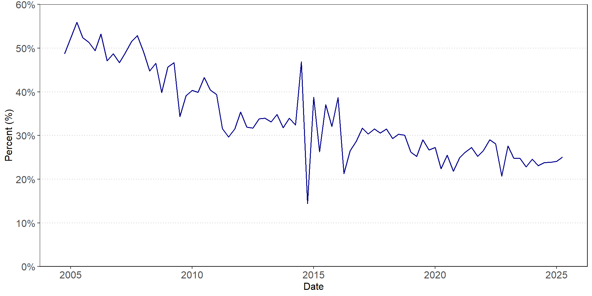

| Asia | Europe | North America |
|---|---|---|
| Agricultural Bank of China | BNP Paribas | JP Morgan Chase |
| Bank of China | Groupe Credit Agricole | Royal Bank of Canada |
| China Construction Bank | Groupe BPCE | Toronto Dominion |
| Industrial and Commercial Bank of China | Societe Generale | Citigroup |
| Bank of Communications (BoCom) | Deutsche Bank | Bank of America |
| Mitsubishi UFJ FG | ING | Goldman Sachs |
| Mizuho FG | Santander | Bank of New York Mellon |
| Sumitomo Mitsui FG | UBS | Morgan Stanley |
| HSBC | State Street | |
| Barclays | Wells Fargo | |
| Standard Chartered |
Introduction to Banking
FIN 331 Lecture 1
Andrew Ainsworth
University of Wollongong
Lecture 1 overview
- Why are financial institutions special?
- Overview of the banking industry in Australia
- Types of financial institutions
- Who are the key regulatory bodies?
- What are the recent trends in banking in Australia
- Reading
- Ch 1, 2
What makes FIs special

Specialness of FIs
- The principal-agent problem and monitoring
- FIs can monitor customers (e.g. corporations) more efficiently than households
- FIs have lower information costs
- They have economies of scale in obtaining information
- FIs are incentivized to monitor on behalf of households (delegated monitoring)
- New secondary securities may enable FIs to monitor more effectively
- Short-term contracts allow more control and monitoring power for FIs
- FIs reduce information asymmetry
- FIs can monitor customers (e.g. corporations) more efficiently than households
Specialness of FIs
- FIs can provide superior liquidity to households (e.g. demand deposits)
- Secondary claims issued by FIs have less price risk
- FIs have economies of scale in transaction costs
- FIs are able to better manage and bear the maturity mismatch between assets and liabilities
- FIs play an important role in allocating capital to different sectors of the economy
- Depository institutions transmit monetary policy to the economy
- FIs can provide efficient payment services
Flow of funds with FIs

Functions of FIs
- Brokerage function
- Acts as an agent for the saver by providing information and transaction services
- Results in economies of scale
- Asset-transformation function
- Issue more attractive financial claims to household savers
- Finance the purchase of primary securities by selling financial claims to household investors and others
Australian financial institutions
- Authorised Deposit-Taking Institutions (ADIs)
- Banks
- Credit Unions
- Building Societies
- Insurance Companies
- General Insurance
- Life Insurance
- Private Health Insurance
- Superannuation
- Other
- Registered Financial Corporations
- Managed Funds
Authorised deposit-taking institutions (ADIs)
- The Banking Act 1959 provides the bulk of legislation relevant to ADIs
- The Banking Act 1959 defines a banking business as one that consists of:
- Both taking money on deposit (otherwise than as part‑payment for identified goods or services) and making advances of money; or
- Other financial activities prescribed by the regulations for the purposes of this definition.
- An ADI is defined as a body corporate that has:
- Applied to the Australian Prudential Regulation Authority (APRA) to carry on a banking business; and
- Has been granted authority by APRA to carry on a banking business in Australia
- Note: APRA restricts the use of the term bank
Australian financial system regulation
- FIs receive special regulatory attention as there are significant negative externalities of FI failure
- There are five regulators that are relevant to the Australian financial system
- Australian Prudential Regulation Authority (APRA)
- Regulate the entry of banks
- Provides prudential regulation of financial institutions to ensure the “financial safety and stability of institutions”
- APRA sets out prudential standards that provide rules around minimum requirements in relation to capital, governance and risk management
- These standards are legally binding
- They undertake monitoring and surveillance of FIs
Australian financial system regulation
- Australian Securities and Investments Commission (ASIC)
- Regulates the conduct of corporations, financial markets and financial services organisations, as well as consumer credit
- Australian financial services licence
- Australian credit licence
- Financial product disclosure
- Responsible lending conduct
- Regulates the conduct of corporations, financial markets and financial services organisations, as well as consumer credit
Australian financial system regulation
- Reserve Bank of Australia (RBA)
- Central bank
- Responsible for monetary policy, financial system stability and regulation of the payments system
- Australian Transaction Reports and Analysis Centre (AUSTRAC)
- Anti-money laundering and counter-terrorism financing regulator
- Financial intelligence unit
- Australian Competition and Consumer Commission (ACCC)
- Regulates competition in Australia across all areas of the economy
Number of ADIs in Australia
Totals assets
Types of assets
Types of liabilities
Net loans to deposits
Deposits to assets
Net profit after tax
Return on equity
Non-interest income share
Global systemically important banks
- The Financial Stability Board provides a list of the most important global banks
- We will be monitoring news surrounding these banks in the tutorials
Conclusion
- Financial institutions are special for a number of reasons
- The principal-agent problem and monitoring
- They provide liquidity to households
- They can manage the mismatch between assets and liabilities
- Financial institutions in Australia
- Who are the key regulatory players
- What are the recent trends in banking
- Next week: Interest Rate Risk